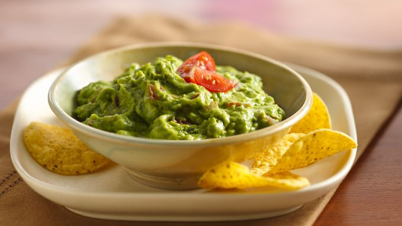

Guacamole

Description
Few appetizers are more associated with Mexican food than guacamole.
Who can resist this sumptuous green dip made from ripe avocados?
This recipe has just the right balance of avocados, onion, jalapeños, cilantro and lime juice.
Ingredients
- 2 large ripe avocados, pitted, peeled and mashed
- 2 medium tomatoes, finely chopped (1 1/2 cups)
- 2 jalapeño chilies, seeded and finely chopped
- 1 medium onion, chopped (1/2 cup)
- 1 garlic clove, finely chopped
- 2 tablespoons finely chopped fresh cilantro
- 2 tablespoons lime or lemon juice
- 1/2 teaspoon salt
- Dash of pepper
Steps
- Mix all ingredients in glass or plastic bowl. Cover and refrigerate 1 hour to blend flavors.
- Serve, accompanied by nachos if desired.